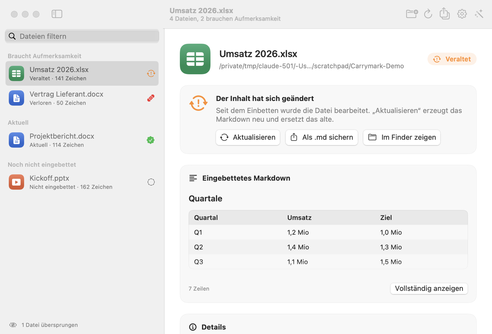

Carrymark wandelt Word, Excel und PowerPoint mit microsoft/markitdown in Markdown um, legt es direkt in die Office-Datei und sagt dir, wann es nicht mehr zum Inhalt passt. Lokal, ohne KI.
Wer Office-Dokumente für Suche, Wikis oder Sprachmodelle aufbereitet, legt das Markdown meist irgendwo anders ab. Ab dem Moment laufen Datei und Abzug auseinander: Jemand ändert eine Zahl in Excel, und der Abzug im Wiki stimmt nicht mehr.
Carrymark dreht das um. Das Markdown steckt in der Datei selbst, und ein Fingerprint zeigt, ob es noch zum Inhalt passt.
$ carrymark sync ~/Dokumente
Aktuell Projektbericht.docx: Markdown eingebettet (114 Zeichen, markitdown/0.1.8).
Aktuell Umsatz 2026.xlsx: Aktuell, nichts zu tun.
# Jemand ändert in Excel eine Zahl.
$ carrymark check "Umsatz 2026.xlsx"
Veraltet Umsatz 2026.xlsx
Der Inhalt hat sich seit dem Einbetten geändert.
$ carrymark export ~/Dokumente --okf -o wissen/
wissen/projektbericht-docx.md
wissen/umsatz-2026-xlsx.md
OKF-Bundle: wissen/index.mdcarrymark check vergleicht den Fingerprint mit dem
aktuellen Inhalt: aktuell, veraltet oder verloren.carrymark sync bettet neu ein, was sich
geändert hat, und holt Verlorenes aus der Sicherung zurück.Eine DOCX-, XLSX- oder PPTX-Datei ist ein ZIP-Archiv. Carrymark legt das Markdown dort so ab, wie Office selbst Custom-XML-Datastores registriert, und Office behält es beim Speichern.
Der kleine Eintrag in docProps/custom.xml ist die
Versicherung: Fehlt später der große Part, der Eintrag aber nicht, hat ein Programm den Part
entfernt. Carrymark meldet dann Verloren und stellt das Markdown wieder her.
Der Selbsttest lässt jede App eine Datei anlegen, bettet Markdown ein, öffnet die Datei wieder in der App, ergänzt Text und speichert. Danach wird geprüft, was übrig ist.
| App (macOS) | Part | GUID | Fingerprint-Eintrag | Markdown |
|---|---|---|---|---|
| Word 16.113.4 | überlebt | gleich | da | vollständig |
| Excel 16.113.3 | überlebt | gleich | da | vollständig |
| PowerPoint 16.113.4 | überlebt | gleich | da | vollständig |
Noch nicht getestet: Office für Windows und im Browser, der Dokumentinspektor, Pages, Google Docs, LibreOffice.
Ordner ins Fenster ziehen, und Carrymark zeigt für jede Office-Datei den Zustand und eine Vorschau des Markdowns, Tabellen als Tabellen. Einbetten, aktualisieren, wiederherstellen und als OKF-Bundle exportieren mit einem Klick. Andere Dateitypen nimmt die App gar nicht erst an.

Die Umwandlung nach Markdown. MIT-Lizenz, © Microsoft Corporation. GitHub
Vorlage für Frontmatter und Bundles, von Google Cloud Platform. Spezifikation
Einbetten, Prüfen, Wiederherstellen, Export und die Mac-App. MIT-Lizenz.
git clone https://github.com/GodModeAI2025/OfficeMD.git carrymark
cd carrymark
./carrymark setup # einmalig: Python-Umgebung mit markitdown
./carrymark sync ~/Dokumente # prüfen, einbetten, aktualisieren
./carrymark export ~/Dokumente --okf -o wissen/Python 3.10 oder neuer. Keine Netzwerkzugriffe, keine Telemetrie, keine KI.